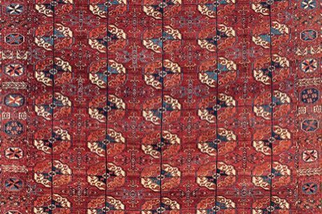
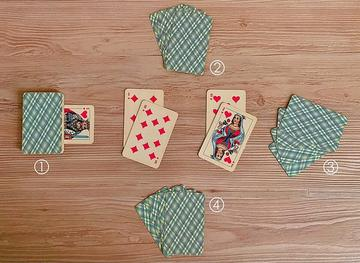

Home / Living Traditions / Persia, Caucasus and Central Asia
Encyclopedia ID 249
Turkmen gul carpet
Also known as Türkmen halysy · hali

.jpg){kind=link}
Arrange knotted gul medallions and minor guls into rows with correct tribal symmetry, then colour them in madder red and indigo.
Heritage note
Part of the living heritage of Turkmenistan.
Origins
A living tradition passed from person to person; it is not tied to a single dated origin. It belongs to the cultural world of Persia, Caucasus and Central Asia.
Sources
Related entries

Ikat Pattern Dyeing
Uzbekistan · Crafts and makingPlay preview · in the Textile Crafts of the World app
Persian Carpet Knotting
Iran +1 · Crafts and makingPlay preview · in the Textile Crafts of the World app
Suzani embroidery
Uzbekistan +1 · Crafts and makingPlay preview · in the Textile Crafts of the World app

Celtic knot weave
Ireland +1 · Crafts and makingPlay preview · in the Textile Crafts of the World app
Sashiko Stitch Patterns
Japan · Crafts and makingPlay preview · in the Textile Crafts of the World app
More from Turkmenistan


Nard / backgammon
Turkmenistan +1 · Board and table games

Turkmen Silver Jewelry Designer
Turkmenistan · Crafts and makingAshyk
Turkmenistan · Dexterity and skill gamesTurkmen Akhal-Teke equestrian games
Turkmenistan · Street and playground games